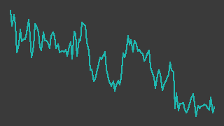

クラフティア（1959）
東証プライム／レポート更新 2026-09-04
記述の裏取り 36/67件が裏付けあり／31件は未確認・要修正（検証 2026-08-29）
IR情報 ↗決算短信一覧 ↗株探 ↗

画像判定※・6か月・基準日 2026-09-03一行でいうと：九州電力系の電気設備サブコンで、2025年10月に「九電工」から社名を変えた。売上はほぼ横ばいのまま工事利益率が上がり、2026年3月期の経常利益は中期経営計画が2029年度に置いた目標のすぐ手前まで来ている。最大の不確実性は、完成時期が後ろにずれ続けている宇久島メガソーラーのEPC工事。
週次アップデート最新 2026-W36・全 2 件
新しい週を上に置いている。過去の記述は書き換えず、そのまま残している。
2026-W36（2026-08-31 週）
ほぼ横ばい。レーティング日報以外に材料は見当たらない
- 株価: 週間 +0.4%（8178→8209円・採用終値ベース、照合成立 4日、週内 8096〜8405円）
- 出来高: 前週比 -1.3%（今週 828,600株／前週 839,200株）※／信用倍率: 4.92倍（買残 91.1千株・売残 18.5千株、08/28時点）※
- 判定: 「見送(トレンド)」／開示: なし
- ニュース: 09/01 レーティング日報【最上位を継続＋目標株価を増額】 (9月1日) 株探 ↗
（解釈）9/1付のレーティング日報に名前が挙がっている（最上位継続・目標株価増額）が、出来高・株価への反応は限定的だった
次週に見ること: ① 材料の少ない週が続いている。開示・ニュースの有無を来週も確認する
2026-W35（2026-08-24 週）
適時開示なし。株価は 8,255円 で小動きのまま出来高が細り、動いたのは地域向けの発表2件だけだった。
- 採用終値は 2026-08-27 の 8,255円✓。前週末（2026-08-21）の 8,179円✓から +0.9%。週内の出来高は 322,600株※（8/24）から 90,500株※（8/27）へ日を追って細った。8/28 は照合が成立せず採用終値なし（出典:
data/prices/daily.csv） - 会社が今週出したのはプレスリリース2件で、どちらも 2026-08-24。ひとつは宮崎県・宮崎市と結んだ「危険な盛土等の情報提供に関する協定」（https://www.kraftia.co.jp/press/docs/a6a163112be93fc52d1958b6595d87ed.pdf 2026-08-29 取得）、もうひとつは「キャナルシティ劇場」のネーミングライツ取得で、2026年10月1日から「クラフティア劇場」になる（https://www.kraftia.co.jp/press/docs/2961e82f4881bca8e7fd84bdfdae329e_2.pdf 2026-08-29 取得）。いずれも業績への影響は開示されていない。社名変更の浸透に地元で金を使う段階に入った、と読める
- 前週の 2026-08-20 には、関電工・きんでん・当社を含む電気設備工事7社による「電気BIM推進協議会」の発足が公表された（協議会の発足自体は 2026年3月25日。https://www.kraftia.co.jp/press/docs/6e809540fdf4af18c4b5544b3cfc86d3.pdf 2026-08-29 取得）。人手が制約になっている業界で、同業が競争ではなく標準化で手を組んだ動きにあたる
- 信用買い残は 90.1千株※、倍率 4.62倍※（2026-08-21 時点）。7月末の 79.6千株※から積み上がっており、7/30 の決算後の下げを拾った買いが残っている可能性がある（出典:
data/margin/1959.csv）
次週に見ること：①2026年9月に設立予定の投資ファンド「クラフティア サクセッション・バリュー・パートナーズ」の設立開示が出るか ②宇久島の長崎県海域占用許可に動きがあるか ③9月末の中間配当の権利取りで需給が変わるか
次期売上・利益推定対象 FY2027-03・作成済み・変数 4 個
作成済み 対象期 FY2027-03・起案 2026-09-05。検証済みデータと明示した仮定から機械計算した概算であり、会社計画でも的中予想でもない。推定 の付いた変数を疑うための頁。
会社計画・市場予想・実績との比較（百万円）
| 指標 | 前期実績 | 会社計画 | 市場予想 | 当台帳推定 | 市場予想比 |
|---|---|---|---|---|---|
| 売上 | 476,123 | 500,000 | — | 485,518 | — |
| 営業利益 | 54,600 | 55,500 | — | 53,892 | — |
市場予想: 未取得。みんかぶの証券アナリスト予想ページ（https://minkabu.jp/stock/1959/analyst_consensus）を 2026-09-05 に取得しようとしたが HTTP 403 で読めず、コンセンサスの有無そのものを確認できていない。比較対象は会社計画のみ
計算の分解
| セグメント | 式（値を代入） | 売上（百万円） |
|---|---|---|
| 1Q実績（2026年4〜6月・確定分） | 98,696 = 98,696 | 98,696 |
| 2〜4Q（前年同期の売上×伸び） | 375,555 × 1.03 = 386,821.65 | 386,822 |
変数と根拠
カードを押すと、その値の置き方（メモ・出典）が開く。推定 の変数から疑うこと。
1Q実績（2026年4〜6月・確定分）q1_revenue98696実績
data/fundamentals/1959.csv2〜4Q（前年同期の売上×伸び）prev_q2_q4375555実績
data/fundamentals/1959.csv2〜4Q（前年同期の売上×伸び）growth1.03推定
全社op_margin0.111推定
感度 — この推定を最も動かす変数
各変数を +10% したときの営業利益の変化。上にある変数ほど、根拠を厚く確かめる価値がある。ただし op_margin だけは別扱い——営業利益 = 売上合計 × op_margin なので +10% は定義上つねに +10% になり、売上側の変数と大小を比べても意味が無い。
| 変数 | セグメント | 営業利益への影響 |
|---|---|---|
op_margin | 全社 定義上 | +10.0% 乗法モデルなので定義上つねに +10%。売上側の変数との大小比較には意味が無い（率の水準そのものを疑うこと） |
growth | 2〜4Q（前年同期の売上×伸び） | +8.0% |
prev_q2_q4 | 2〜4Q（前年同期の売上×伸び） | +8.0% |
q1_revenue | 1Q実績（2026年4〜6月・確定分） | +2.0% |
推定の変遷
過去の版は書き換えずに残す。数値感がどう変わってきたかが学習の履歴になる。
| 起案日 | 対象期 | 売上 | 営業利益 | 何を変えたか |
|---|---|---|---|---|
| 2026-09-05 | FY2027-03 | 485,518 | 53,892 | 初版（Claude 起案・人間未確認）。1Q実績（確定分）＋残り3四半期（前年同期×伸び）の2区分。工事種別（屋内線・空調管・配電線）の 構成比は二次情報しか無く照合が通っていないため、時間軸で分けた。会社計画は売上高 500,000・営業利益 55,500 百万円 （fundamentals の採用値。前期比 +5.0%・+1.6%）。screen.py では直近四半期がマイナス（MOMENTUM_REVERSED）。 推定は売上・営業利益とも会社計画を下回り、営業利益は前期比でほぼ横ばい〜微減 |
会社概要この会社は何者か・財務の推移と健全性・今後の展望とリスク・値動きと市場の評価・出典・検証の記録
この会社は何者か
福岡市天神に本社を置く電気設備工事会社（サブコン）で、1944年設立。2025年10月に「九電工」から「クラフティア」へ社名を変えた。東証プライムと福岡証券取引所に上場している。従業員数は 7,485名※（2026年4月1日現在・会社概要。連結とは書かれていない。会社の業績ハイライトが出す連結従業員数は2025年度末 11,122人※）、資本金は 125.6億円※（いずれも2026年4月1日現在）。
九州電力グループの一員だが、売上の大半は九電向けではない。2026年3月期の設備工事業の工事売上高のうち九州電力グループ向けは 11.7%※で、残る 88.3%※は一般得意先である。社名から「九電」を外した理由もここにあり、九州以外の売上比率が上がって社名と実態がずれた、と報じられている（二次情報）。
事業は工事の種類で3つに分かれる。2026年3月期の連結売上構成は、屋内線工事（ビル・工場などの構内電気設備）が 50.1%※、空調管工事が 34.1%※、配電線工事（電柱から先の配電網。九州電力送配電からの受託が中心）が 11.9%※、残り 3.9%※がその他の事業。利益の伸びを作っているのは屋内線と空調管で、受注の中身は首都圏・関西圏・福岡都市圏の再開発案件、物流施設、そしてデータセンター・工場関連である。
工事以外に発電事業を持つ。太陽光・風力を合わせた発電容量は持分相当で 564.6MW※。自社グループ運営の案件はその他事業の売上高に、持分出資案件は営業外収益に入る二本立てになっている。この発電事業のうち、長崎県・宇久島のメガソーラー（EPCを当社が請け負う）が現在の最大の論点で、「今後の展望とリスク」に書いた。
財務の推移と健全性
通期の連結業績。すべて data/fundamentals/1959.csv の採用値（2つの取得元で照合が成立した行）で、2027/3予は会社計画。
| 決算期 | 売上高（百万円） | 営業利益（百万円） | 経常利益（百万円） | 純利益（百万円） | EPS（円） |
|---|---|---|---|---|---|
| 2023/3 | 395,783 | 32,083 | 35,462 | 26,349 | 371.92 |
| 2024/3 | 469,057 | 38,016 | 42,362 | 28,017 | 395.87 |
| 2025/3 | 473,954 | 41,388 | 44,434 | 28,883 | 408.35 |
| 2026/3 | 476,123 | 54,600 | 58,157 | 40,053 | 566.25 |
| 2027/3予 | 500,000 | 55,500 | 59,000 | 40,500 | 572.54 |
出所: data/fundamentals/1959.csv の採用値（別サイト2つ以上が一致した値だけ）。5/5点を採用。
この会社の直近3年で起きたことは「増収」ではなく「単価の改善」である。 売上高は 2024/3 の 4,691億円✓から 2026/3 の 4,761億円✓へ、2年で 1.5% しか増えていない。同じ期間に営業利益は 380億円✓から 546億円✓へ 44% 増えた。会社は要因を工事利益率の向上と説明しており、売上総利益率は 13.8%※（2024/3）→ 14.9%※（2025/3）→ 18.3%※（2026/3）と切り上がっている。諸物価の上昇分を価格に転嫁しつつ、施工体制に見合う案件を選んで受注する（選別受注）動きが、そのまま利益率に出ている。
出所: data/fundamentals/1959.csv の採用値（別サイト2つ以上が一致した値だけ）。8/8点を採用。
単独四半期で見ると、営業利益率が二桁に乗ったのは 2024/10-12 期からで、その後は 8.23%✓（2025/1-3）に一度落ちたものの、2025/4-6 期以降は 10.87〜12.23%✓ の帯に収まっている。まだ5四半期ぶんの実績しかない帯であり、これが景気の一局面なのか構造変化なのかは、この期間だけでは判別できない。
財政状態とキャッシュフロー。
| 決算期 | 総資産（百万円） | 自己資本比率（%） | 現金及び現金同等物（百万円） | 営業キャッシュフロー（百万円） | フリーキャッシュフロー（百万円） |
|---|---|---|---|---|---|
| 2024/3 | 503,284 | 57.4 | 94,588 | 43,969 | 41,655 |
| 2025/3 | 488,472 | 63.5 | 70,437 | 8,656 | ▲254 |
| 2026/3 | 523,268 | 66.4 | 50,548 | 12,332 | ▲5,811 |
貸借対照表は厚い。自己資本比率は 66.4%✓（2026/3）、2027/3期1Q末は 70.5%†でさらに上がった。有利子負債は 252億円※で、現金及び現金同等物 505億円✓を下回る。
ただしキャッシュフローは2期連続で見劣りする。 利益が過去最高になった 2026/3 の営業キャッシュフローは 123億円✓しかなく、純利益 401億円✓との差が大きい。投資キャッシュフローは ▲181億円✓で、フリーキャッシュフローは ▲58億円✓。現金は2年で 946億円✓から 505億円✓へ減った。差の主因は工事代金の回収サイクルと発電事業への投資で、宇久島の工事未収金はSPC（発電事業者）が資金調達を行うたびに回収できる見込みだと会社は説明している※。利益とキャッシュが噛み合うかどうかは、この銘柄では宇久島の資金調達の進み方に依存する。
今後の展望とリスク
中期経営計画が初年度で目標に届いてしまった
2025〜2029年度の中期経営計画は、2029年度の連結経常利益 600億円†、ROIC 10%以上†、中計期間合計の投資総額 2,000億円†、株主還元は連結配当性向40%目安の累進配当†を掲げている。ところが初年度である 2026年3月期の実績が、経常利益 58,157百万円✓（目標の97%）、ROIC 12.1%※で、経常利益とROICの両方に4年前倒しで並んでしまった。会社自身、決算説明資料の中計進捗ページで「数値（600億円）のローリングについて、検討していく」と書いている※。投資総額は 241億円※で、こちらは2,000億円に対してまだ1割強である。
目標の引き上げが実際に開示されるかどうかが、この銘柄の当面の見どころと読める。ただし「検討していく」以上のことは開示されておらず、時期も水準も未定である。
受注は増えている。売上に変わるのはこれから
2027年3月期の会社計画は売上高 5,000億円✓（+5.0%）・営業利益 555億円✓（+1.6%）で、利益はほぼ横ばい。1Q（2026年4-6月）の実績は売上高 98,696百万円✓（前年同期比 ▲1.9%†）、営業利益 10,731百万円✓（▲3.3%†）と前年割れした。会社は「工程の初期段階にある大型案件が比較的多く、出来高計上が限定的だった」ためと説明している†。通期計画に対する進捗は売上で 19.7%、営業利益で 19.3%（当台帳の算出）。前期1Qの売上が通期実績の 21.1% だったことと比べると、やや遅い立ち上がりである。
一方で受注は逆方向に動いている。1Qの受注高は 146,350百万円†（前年同期比 +16.1%†）、四半期末の手持工事高は 528,041百万円†（+9.1%†）で、会社は決算説明資料でどちらも過去最高と記している※。手持工事高は通期売上計画 5,000億円✓を超える水準にある。空調管工事の受注が +33.3%† と伸びたのが目立つ。売上総利益率も 1Q として過去最高の 19.5%※だった。
リスク1: 宇久島メガソーラーのEPC
長崎県・宇久島の大規模太陽光発電所のEPC工事を当社が請け負っている。工事の内訳は宇久島島内が約7割※、佐世保側（九州本土）が約2割※、海底ケーブルが約1割※。状況は次のとおりで、完成時期は後ろにずれ続けている。
- 当初は2026年度中の完成を見込んでいたが、2026年3月期決算短信の時点で「遅れる見通し」となり†、2027年3月期1Q短信では「完成予定時期は2027年度以降」と書かれた†
- クリティカルパスである佐世保側の交直変換所（HVDC建屋）は、建設用地の使用権を 2026年5月1日に取得済み†。各種申請手続き中で、完了次第に着工※
- 海底ケーブルは、2025年7月に佐世保市の海域占用許可を取得済み※だが、長崎県が管轄する海域の占用許可はまだ協議中†。県の許可のあと海上保安庁への申請が要る※
- SPC側は売電開始の遅れでFIT期間（2040年9月末まで※）が短くなり採算悪化が懸念されるため、FIP制度への転換・コーポレートPPA・併設蓄電池といった新しいスキームを検討中※。EPCのコスト上昇分の増額発注はSPCと協議中※で、金額は開示されていない
- SPCと金融機関は融資契約の締結交渉を継続中※
つまり、許可・資金調達・増額交渉の3つがどれも未決着で、工事の完成時期も請負金額も確定していない。手持工事高のうち太陽光部門は 73,998百万円※（2027/3期1Q末）で、前年同期の 101,031百万円※から減っている。
リスク2・3
- 人の制約。電気設備工事は有資格者がいないと受けられず、人員は年単位でしか増えない。これは受注を選べる（＝価格決定力がある）理由でもあり、同時に受注を売上に変える速度の上限でもある。今期1Qの「受注は伸びたが売上は減った」はその両面が同時に出た形と読める
- 利益率の持続性。直近の利益率は価格転嫁と選別受注で作られている。建設需要が緩んで発注側の交渉力が戻れば、この帯は維持できない可能性がある。判定材料は四半期ごとの受注高と工事利益率で、いまのところどちらも悪化の兆候は出ていない
資本配分の変化
2026年9月に投資ファンド「クラフティア サクセッション・バリュー・パートナーズ」を設立し、10月以降に運用を開始する予定※。ファンド規模は 200億円※、運用期間10年※、当社の持株比率は設立時で約99.9%※の連結子会社。事業承継・カーブアウト・資本提携などを通じて電気設備工事・空調衛生工事・AIデジタル・建設テックなどの領域に戦略投資するとしている※。サブコンが自前で投資機能を持つのは資本配分の性格が変わる動きで、成果が出るまでには時間がかかる。
株主還元は 2026年3月期が年間220円†（連結配当性向 38.9%†）、2027年3月期予想も年間220円†（38.4%†）。累進配当を掲げているので減配は想定しにくい一方、配当性向は既に目安の40%に近く、増配余地は利益成長そのものに依存する。自己株式の取得は「宇久島プロジェクトの先行投資の回収状況を踏まえ、株価の動向も見極めながら判断したい」、株式分割も「並行して検討」と書かれている※。
値動きと市場の評価
出所: data/prices/daily.csv の採用終値（2つの取得元が一致した終値だけ）。ザラ場の高値・安値は照合を通っていないので使っていない。244/244点を採用、52週の採用終値 242営業日、出来事 2/2件を配置。
直近52週の採用終値は、安値 6,905円✓（2025-10-02）から高値 10,565円✓（2026-02-27）まで。直近は 8,255円✓（2026-08-27）で、2月末の高値からは 22% 下にいる。
決算発表日に大きく動く銘柄である。
- 2026-04-28（2026年3月期 本決算）: 前日 9,169円✓から 9,724円✓へ +6.1%。出来高は 1,144,100株※で、52週で最も多い日だった。営業利益が前期比 +31.9%† と伸び、年間配当が 140円†から 220円†へ増えたことへの反応と読める
- 2026-07-30（2027年3月期 1Q）: 前日 8,912円✓から 8,177円✓へ ▲8.2%。出来高 649,800株※。同じ日に受注高は過去最高を更新している※のに売られており、市場は受注ではなく、売上と営業利益の前年割れを見たと読める
その後の8月は 8,024〜8,467円✓の狭い帯で、今週は出来高が細って動いていない。
バリュエーションは以下（すべて 2026-08-27 の採用終値 8,255円✓に対する当台帳の算出）。
- PER: 2026年3月期のEPS 566.25円✓に対して約14.6倍。2027年3月期の会社計画EPS 572.54円✓に対して約14.4倍
- PBR: 1株当たり純資産 4,915.49円†に対して約1.7倍
- 配当利回り: 2027年3月期の予想年間配当 220円†に対して約2.7%
data/master.yaml が指定する評価手法は per_netcash（ネットキャッシュ控除後のPER）である。現金及び現金同等物 505億円✓に対し有利子負債は 252億円※で、差し引きの手元資金は厚い。ただし建設業の手元資金は工事代金の運転資金でもあり、全額を余剰現金とみなすのは危うい。実際、直近2期はフリーキャッシュフローがマイナスで現金が減っている。ネットキャッシュ控除後のPERを機械で計算する仕組みは当台帳にまだ無く、ここは数値を出していない。
需給面では、信用買い残 90.1千株※・信用倍率 4.62倍※（2026-08-21）。7月末から積み上がっており、決算後の下げを拾った買いが上値では戻り売りになりうる。
出典
凡例: ✓=2ソース照合済みの採用値 ／ ※=未照合・参考値 ／ †=決算短信（一次情報）から直接
一次情報（会社開示）
| 資料 | 開示日 | URL | 備考 |
|---|---|---|---|
| 2027年3月期 第1四半期決算短信 | 2026-07-30 | https://www.kraftia.co.jp/ir/docs/2026_260730_tanshin.pdf | 本稿の † はここと下の本決算短信から直接読んだ値（2026-08-29 取得） |
| 2026年3月期 決算短信 | 2026-04-28 | https://www.kraftia.co.jp/ir/news/docs/2026_260428_kessantanshin.pdf | 通期実績・配当・中計KPI・宇久島（2026-08-29 取得） |
| 2027年3月期 第1四半期 決算説明資料 | 2026-07-30 | https://www.kraftia.co.jp/ir/news/docs/2026_260730_setsumeikai.pdf | 売上総利益率・ROIC・中計進捗・発電容量・ファンド。短信ではないので本稿では ※（2026-08-29 取得） |
| 業績ハイライト（受注高を含む） | — | https://www.kraftia.co.jp/ir/trend.html | 連結の受注高の年度別推移（2026-08-29 取得） |
| 会社概要 | — | https://www.kraftia.co.jp/company/about.html | 設立年・本社・資本金・従業員数（2026-08-29 取得） |
| 社名変更特設ページ | — | https://www.kraftia.co.jp/new/ | 社名変更が2025年10月であること（2026-08-29 取得） |
| プレスリリース「危険な盛土等の情報提供に関する協定」 | 2026-08-24 | https://www.kraftia.co.jp/press/docs/a6a163112be93fc52d1958b6595d87ed.pdf | 2026-08-29 取得 |
| プレスリリース「キャナルシティ劇場」ネーミングライツ | 2026-08-24 | https://www.kraftia.co.jp/press/docs/2961e82f4881bca8e7fd84bdfdae329e_2.pdf | 2026-08-29 取得 |
| プレスリリース「電気BIM推進協議会」発足 | 2026-08-20 | https://www.kraftia.co.jp/press/docs/6e809540fdf4af18c4b5544b3cfc86d3.pdf | 2026-08-29 取得 |
| IRニュース一覧 | — | https://www.kraftia.co.jp/ir/news/ | 2026年8月の適時開示が無いことの確認（2026-08-29 取得） |
当台帳のデータ
| ファイル | 使った箇所 |
|---|---|
data/prices/daily.csv |
採用終値・出来高・52週レンジ・決算日の値動き |
data/fundamentals/1959.csv |
通期・四半期の業績、財政状態、キャッシュフロー、会社計画 |
data/margin/1959.csv |
信用買い残・信用倍率 |
data/master.yaml |
市場区分・業種・評価手法・監視理由 |
二次情報
| 出典 | 使った箇所 |
|---|---|
| Wikipedia「クラフティア」ほか報道（2026-08-29 取得） | 社名変更の時期と理由の背景。数値には使っていない |
未確認
data/tanshin/1959.csvが無い。本稿の † はレポート作成時に決算短信PDFから読んだ値であり、まとめサイトとの2ソース照合を通っていない- 受注高・手持工事高・売上総利益率・ROIC・配当・発電容量は
data/に無く、会社開示の単一出典である - 中期経営計画の2029年度目標（経常利益600億円）の「ローリング検討」は決算説明資料の記述で、正式な計画変更は開示されていない
- 宇久島EPCの請負金額・増額交渉の金額・完成時期は開示されていない
- アナリストのカバー状況とコンセンサス予想は未確認
- 発行済株式数（70,864,961株†）は短信から読んだが、時価総額・ネットキャッシュ控除後PERの機械計算は当台帳に未実装
記述の裏取り
本文の記述を、書いたのとは別の文脈が出典URLを取り直して1件ずつ判定した結果（読み方）。
検証日 2026-08-29検証した記述 67裏付けあり 36この出典では確かめられない（別の出典が要る） 9出典と食い違う 1確かめられない（到達不可・出典なし） 21再取得した出典 13
裏が取れなかった記述
出典を取り直しても確かめられなかったもの。本文に残っているが、確認済みとして読んではいけない。
| 判定 | 本文の記述 | 再取得して分かったこと | 出典 | どうするか |
|---|---|---|---|---|
| この出典では確かめられない（別の出典が要る） | 週内の出来高は 322,600株※（8/24）から 90,500株※（8/27）へ日を追って細った | data/prices/daily.csv の 1959 volume: 8/24 322,600 → 8/25 156,800 → 8/26 105,800 → 8/27 90,500 と4営業日は確かに減っている。ただし同じ週の 8/28 は 163,500 で増えており（その行は status=SINGLE_SOURCE・採用終値なし）、「週内」「日を追って細った」は週の最終日で成立しない。 | 検証済みデータdata/prices/daily.csv | 「8/27 まで」と範囲を明示するか、8/28（照合不成立日）の出来高 163,500株 に触れる |
| 確かめられない（到達不可・出典なし） | 「危険な盛土等の情報提供に関する協定」 | 再取得は 200（application/pdf）だが fetch_source.py は PDF をテキスト化しないため本文を読めない。data/tanshin/1959.csv も無く、機械抽出の裏付けも無い。 IRニュース一覧（200）にもこの件は無い（'盛土' ヒット0件）ので、宮崎県・宮崎市との協定であることも 2026-08-24 という日付も確かめられていない。 | 一次情報 出典 ↗ | PDFしか出典が無い記述は、読める一次情報（プレスリリース一覧ページ等）のURLを併記する |
| 確かめられない（到達不可・出典なし） | 「キャナルシティ劇場」のネーミングライツ取得で、2026年10月1日から「クラフティア劇場」になる | 再取得は 200（application/pdf）だが fetch_source.py は PDF をテキスト化しないため本文を読めない。data/tanshin/1959.csv も無く、機械抽出の裏付けも無い。 IRニュース一覧（200）に 'キャナルシティ'・'ネーミングライツ' のヒットは0件で、社名・開始日を裏付ける読める出典が無い。 | 一次情報 出典 ↗ | 同上（読める一次情報のURLを併記する） |
| 確かめられない（到達不可・出典なし） | 関電工・きんでん・当社を含む電気設備工事7社による「電気BIM推進協議会」の発足が公表された（協議会の発足自体は 2026年3月25日 | 再取得は 200（application/pdf）だが fetch_source.py は PDF をテキスト化しないため本文を読めない。data/tanshin/1959.csv も無く、機械抽出の裏付けも無い。 IRニュース一覧（200）に 'BIM' のヒットは0件。参加7社・発足日（2026年3月25日）・公表日（2026-08-20）のいずれも確かめられていない。 | 一次情報 出典 ↗ | 同上（読める一次情報のURLを併記する） |
| 出典と食い違う | 従業員は連結 7,485名※ | 業績ハイライトを再取得（200）。「従業員数の推移（単位：人） | 2020年度 … 2025年度 / 個別 6,353 … 6,886 / 連結 10,092 … 11,122」。会社が開示する連結従業員数は 2025年度末で 11,122人であって 7,485名ではない。会社概要（200）は「従業員数 | 7,485名 （2026年4月1日現在）」とだけ書き、連結とは書いていない。7,485名に「連結」を付けた点が出典と食い違う。 | 一次情報 出典 ↗ 出典 ↗ | 「連結」を外して会社概要どおり「従業員数 7,485名（2026年4月1日現在）」にするか、連結で書くなら業績ハイライトの 11,122人（2025年度）に差し替える |
| 確かめられない（到達不可・出典なし） | 2026年3月期の設備工事業の工事売上高のうち九州電力グループ向けは 11.7%※で、残る 88.3%※は一般得意先である。 | 再取得は 200（application/pdf）だが fetch_source.py は PDF をテキスト化しないため本文を読めない。data/tanshin/1959.csv も無く、機械抽出の裏付けも無い。 再取得できた HTML（業績ハイライト・会社概要）に九州電力グループ向け比率の記載は無い。 | 一次情報 出典 ↗ 出典 ↗ | 有価証券報告書など読める一次情報を出典に足すか、data/tanshin/1959.csv を作る |
| 確かめられない（到達不可・出典なし） | 九州以外の売上比率が上がって社名と実態がずれた、と報じられている（二次情報） | この記述の出典URLが本文に無い（出典表の二次情報欄も「Wikipedia「クラフティア」ほか報道」だけでURLが無く、fetch_source.py --list の13件にも入らない）。社名変更特設ページ（200）が挙げる理由は「事業エリアも九州にとどまらず、日本全国、そして海外へと拡がっています。こうした歩みを礎に、未来に向けてさらに成長していくため」で、売上比率には触れていない。 | 出典なし — | URL のある二次情報を出典表に足すか、この一文を落とす |
| この出典では確かめられない（別の出典が要る） | 屋内線工事（ビル・工場などの構内電気設備） | 業績ハイライト（200）の部門名は「一般電気工事」「空調管工事」「配電線工事」「兼業事業」で、「屋内線工事」という部門名も括弧内の定義もこの出典に無い（会社概要・IRニュース一覧にも無い）。比率そのものは V16 で一致を確認している。 | 一次情報 出典 ↗ | 開示の部門名（一般電気工事）に合わせるか、旧称であることを注記する |
| 確かめられない（到達不可・出典なし） | 太陽光・風力を合わせた発電容量は持分相当で 564.6MW※。 | 再取得は 200（application/pdf）だが fetch_source.py は PDF をテキスト化しないため本文を読めない。data/tanshin/1959.csv も無く、機械抽出の裏付けも無い。 再取得できた HTML に発電容量の記載は無い。 | 一次情報 出典 ↗ | 読める一次情報（統合報告書のHTML等）を出典に足す |
| この出典では確かめられない（別の出典が要る） | 売上総利益率は 13.8%※（2024/3）→ 14.9%※（2025/3）→ 18.3%※（2026/3）と切り上がっている | data/fundamentals/1959.csv の cost_ratio は FY2024-03 86.22 / FY2025-03 85.08 / FY2026-03 81.71 で、100-cost_ratio は 13.78 / 14.92 / 18.29 と数字は合う。ただし3行とも status=SINGLE_SOURCE（irbank のみ）で採用値ではなく、D7 により裏付けに使えない。売上総利益率そのものを載せた出典は決算説明資料PDFで、再取得は 200（application/pdf）だが fetch_source.py は PDF をテキスト化しないため本文を読めない。data/tanshin/1959.csv も無く、機械抽出の裏付けも無い。 | 検証済みデータdata/fundamentals/1959.csv 出典 ↗ | ※のまま据え置くか、data/tanshin/1959.csv を作って照合する |
| この出典では確かめられない（別の出典が要る） | 2027/3期1Q末は 70.5%†でさらに上がった | data/fundamentals/1959.csv の Q2026-04_2026-06 equity_ratio は 70.5 だが status=SINGLE_SOURCE（kabutan_bs のみ）で採用値ではなく、D7 により裏付けに使えない。出典として挙がる1Q短信は 再取得は 200（application/pdf）だが fetch_source.py は PDF をテキスト化しないため本文を読めない。data/tanshin/1959.csv も無く、機械抽出の裏付けも無い。 | 検証済みデータdata/fundamentals/1959.csv 出典 ↗ | data/tanshin/1959.csv を作って照合するか、※（未照合）扱いに落とす |
| この出典では確かめられない（別の出典が要る） | 有利子負債は 252億円※で、現金及び現金同等物 505億円✓を下回る。 | data/fundamentals/1959.csv FY2026-03 の interest_bearing_debt は 25,200百万円だが status=SINGLE_SOURCE（irbank_bs のみ）で採用値ではない（D7）。比較相手の cash_equivalents 50,548百万円（505億円）は status=OK の採用値。※付きで書かれている点は凡例どおりで、断定形ではない。 | 検証済みデータdata/fundamentals/1959.csv | 照合が成立するまで※のまま。大小関係の断定は採用値が揃ってから |
| 確かめられない（到達不可・出典なし） | 宇久島の工事未収金はSPC（発電事業者）が資金調達を行うたびに回収できる見込みだと会社は説明している※ | 再取得は 200（application/pdf）だが fetch_source.py は PDF をテキスト化しないため本文を読めない。data/tanshin/1959.csv も無く、機械抽出の裏付けも無い。 会社がそう説明したという事実を確かめられる読める出典が無い。 | 一次情報 出典 ↗ 出典 ↗ | 読める一次情報を足すか、記述を落とす |
| この出典では確かめられない（別の出典が要る） | 営業利益率が二桁に乗ったのは 2024/10-12 期からで | data/fundamentals/1959.csv で四半期営業利益率を作れる（operating_income と revenue がともに採用値の）最も古い四半期は Q2024-04_2024-06（10,263/107,205=9.57%）で、次が Q2024-07_2024-09（7,991/112,098=7.13%）、Q2024-10_2024-12 が 11,216/109,771=10.22%。「2024/10-12 が最初の二桁」と言えるのは2四半期ぶんだけで、それ以前の四半期は operating_margin も operating_income も SINGLE_SOURCE（採用値なし）のため、二桁が無かったことを当台帳の採用値では確かめられない。 | 検証済みデータdata/fundamentals/1959.csv | 「採用値のある 2024/4-6 期以降では」と範囲を限定する |
| 確かめられない（到達不可・出典なし） | 2029年度の連結経常利益 600億円†、ROIC 10%以上†、中計期間合計の投資総額 2,000億円†、株主還元は連結配当性向40%目安の累進配当†を掲げている | 再取得は 200（application/pdf）だが fetch_source.py は PDF をテキスト化しないため本文を読めない。data/tanshin/1959.csv も無く、機械抽出の裏付けも無い。 再取得できた HTML（業績ハイライト・IRニュース一覧・会社概要）に中期経営計画の数値目標は載っていない。 | 一次情報 出典 ↗ 出典 ↗ | 中期経営計画ページなど読める一次情報のURLを出典に足す |
| 確かめられない（到達不可・出典なし） | 経常利益 58,157百万円✓（目標の97%）、ROIC 12.1%※で、経常利益とROICの両方に4年前倒しで並んでしまった | 経常利益 58,157百万円は data/fundamentals/1959.csv FY2026-03 ordinary_income（status に OK）と一致する。一方、分母である 600億円目標・ROIC 10%以上・実績 ROIC 12.1% はいずれもPDF のみが出典で確かめられない（再取得は 200（application/pdf）だが fetch_source.py は PDF をテキスト化しないため本文を読めない。data/tanshin/1959.csv も無く、機械抽出の裏付けも無い。）。目標が600億円ならという条件付きで 58,157/60,000=96.9%（→97%）の計算だけは合う。 | 一次情報data/fundamentals/1959.csv 出典 ↗ | V35 と同じ。中計目標とROICの読める出典を足す |
| 確かめられない（到達不可・出典なし） | 「数値（600億円）のローリングについて、検討していく」と書いている※ | 再取得は 200（application/pdf）だが fetch_source.py は PDF をテキスト化しないため本文を読めない。data/tanshin/1959.csv も無く、機械抽出の裏付けも無い。 引用そのものを確かめられない。IRニュース一覧（200）にも計画変更の開示は無い。 | 一次情報 出典 ↗ | 読める一次情報を足す。無ければ引用は落とす |
| 確かめられない（到達不可・出典なし） | 投資総額は 241億円※で、こちらは2,000億円に対してまだ1割強である。 | 再取得は 200（application/pdf）だが fetch_source.py は PDF をテキスト化しないため本文を読めない。data/tanshin/1959.csv も無く、機械抽出の裏付けも無い。 | 一次情報 出典 ↗ | 同上 |
| 確かめられない（到達不可・出典なし） | 1Qの受注高は 146,350百万円†（前年同期比 +16.1%†）、四半期末の手持工事高は 528,041百万円†（+9.1%†）で、会社は決算説明資料でどちらも過去最高と記している※ | 業績ハイライト（200）が持っているのは年度の受注高だけ（連結: 2020年度 325,158 … 2025年度 479,014）で、四半期の受注高も手持工事高も無い。短信・説明資料は 再取得は 200（application/pdf）だが fetch_source.py は PDF をテキスト化しないため本文を読めない。data/tanshin/1959.csv も無く、機械抽出の裏付けも無い。 | 一次情報 出典 ↗ 出典 ↗ 出典 ↗ | data/ に受注高・手持工事高を入れるか、四半期値の読める出典を足す |
| 確かめられない（到達不可・出典なし） | 空調管工事の受注が +33.3%† と伸びたのが目立つ。売上総利益率も 1Q として過去最高の 19.5%※だった。 | 再取得は 200（application/pdf）だが fetch_source.py は PDF をテキスト化しないため本文を読めない。data/tanshin/1959.csv も無く、機械抽出の裏付けも無い。 業績ハイライト（200）の部門別は売上高のみで、部門別受注も四半期の売上総利益率も無い。 | 一次情報 出典 ↗ 出典 ↗ | 同上 |
| 確かめられない（到達不可・出典なし） | 「工程の初期段階にある大型案件が比較的多く、出来高計上が限定的だった」ためと説明している† | 再取得は 200（application/pdf）だが fetch_source.py は PDF をテキスト化しないため本文を読めない。data/tanshin/1959.csv も無く、機械抽出の裏付けも無い。 | 一次情報 出典 ↗ | data/tanshin/1959.csv を作る（fetch_tanshin.py） |
| 確かめられない（到達不可・出典なし） | 工事の内訳は宇久島島内が約7割※、佐世保側（九州本土）が約2割※、海底ケーブルが約1割※。 | 再取得は 200（application/pdf）だが fetch_source.py は PDF をテキスト化しないため本文を読めない。data/tanshin/1959.csv も無く、機械抽出の裏付けも無い。 | 一次情報 出典 ↗ 出典 ↗ | 同上 |
| 確かめられない（到達不可・出典なし） | 2027年3月期1Q短信では「完成予定時期は2027年度以降」と書かれた† | 再取得は 200（application/pdf）だが fetch_source.py は PDF をテキスト化しないため本文を読めない。data/tanshin/1959.csv も無く、機械抽出の裏付けも無い。 | 一次情報 出典 ↗ | 同上 |
| 確かめられない（到達不可・出典なし） | 長崎県が管轄する海域の占用許可はまだ協議中 | 再取得は 200（application/pdf）だが fetch_source.py は PDF をテキスト化しないため本文を読めない。data/tanshin/1959.csv も無く、機械抽出の裏付けも無い。 | 一次情報 出典 ↗ 出典 ↗ | 同上 |
| 確かめられない（到達不可・出典なし） | 手持工事高のうち太陽光部門は 73,998百万円※（2027/3期1Q末）で、前年同期の 101,031百万円※から減っている。 | 再取得は 200（application/pdf）だが fetch_source.py は PDF をテキスト化しないため本文を読めない。data/tanshin/1959.csv も無く、機械抽出の裏付けも無い。 | 一次情報 出典 ↗ | 同上 |
| 確かめられない（到達不可・出典なし） | ファンド規模は 200億円※、運用期間10年※、当社の持株比率は設立時で約99.9%※の連結子会社。 | 再取得は 200（application/pdf）だが fetch_source.py は PDF をテキスト化しないため本文を読めない。data/tanshin/1959.csv も無く、機械抽出の裏付けも無い。 IRニュース一覧（200）に 'ファンド'・'サクセッション' のヒットは0件で、設立に関する適時開示はまだ出ていない。 | 一次情報 出典 ↗ | 設立開示が出たらそのURLを出典にする（本文の『次週に見ること①』と整合） |
| この出典では確かめられない（別の出典が要る） | 2027年3月期予想も年間220円†（38.4%†） | 業績ハイライト（200）は2025年度までで予想配当を載せていない。株探（200・二次）は「利回り | 2.69 ％」「売買最低代金 | 817,800 円」（＝株価8,178円）で、220/8,178=2.690% と整合するが、予想配当額そのものの記載は取れていない。38.4% は 220 ÷ eps_plan 572.54（採用値）=38.42% で計算は合う。出典の1Q短信は 再取得は 200（application/pdf）だが fetch_source.py は PDF をテキスト化しないため本文を読めない。data/tanshin/1959.csv も無く、機械抽出の裏付けも無い。 | 二次情報 出典 ↗ data/fundamentals/1959.csv | data/tanshin/1959.csv を作るか、予想配当の出典を明示する |
| 確かめられない（到達不可・出典なし） | 自己株式の取得は「宇久島プロジェクトの先行投資の回収状況を踏まえ、株価の動向も見極めながら判断したい」、株式分割も「並行して検討」と書かれている※ | 再取得は 200（application/pdf）だが fetch_source.py は PDF をテキスト化しないため本文を読めない。data/tanshin/1959.csv も無く、機械抽出の裏付けも無い。 | 一次情報 出典 ↗ | 読める一次情報を足す。無ければ引用は落とす |
| この出典では確かめられない（別の出典が要る） | 配当利回り: 2027年3月期の予想年間配当 220円†に対して約2.7% | 利回りの水準そのものは株探（200・二次）の「利回り | 2.69 ％」と整合し、220/8,255（採用終値）=2.665%（→約2.7%）の計算も合う。ただし前提の「2027年3月期の予想年間配当 220円」を載せた読める出典が取れていない（V51 と同じ）。 | 二次情報 出典 ↗ data/prices/daily.csv | V51 と同じ始末（予想配当の出典を明示する） |
| この出典では確かめられない（別の出典が要る） | 2027年3月期 第1四半期 決算説明資料 | IRニュース一覧（200）の 2026年07月30日は「2027年3月期第1四半期 決算資料（補足資料）（6.9 MB）」と「第1四半期決算短信（連結）（544.6 KB）」の2件で、「決算説明資料」という資料名は無い（「決算説明会資料」は 2026年05月13日の 2026年3月期分）。PDF本体はテキスト化できないため、このURLと資料名の対応も確かめられていない。 | 一次情報 出典 ↗ 出典 ↗ | 資料名を開示の表記（2027年3月期第1四半期 決算資料（補足資料））に合わせる |
| 確かめられない（到達不可・出典なし） | | Wikipedia「クラフティア」ほか報道（2026-08-29 取得） | 社名変更の時期と理由の背景。数値には使っていない | | この行にURLが無く、fetch_source.py が再取得できる対象（本文記載URL13件）にも入らない。出典として再取得できない。 | 二次情報 — | URL を書くか、この行を落とす（社名変更の時期自体は /new/ で裏が取れている＝V10） |
裏付けが取れた記述 36件
| 判定 | 本文の記述 | 再取得して分かったこと | 出典 | どうするか |
|---|---|---|---|---|
| 裏付けあり | 採用終値は 2026-08-27 の 8,255円✓。前週末（2026-08-21）の 8,179円✓から +0.9% | data/prices/daily.csv の 1959: 2026-08-27 close=8255.0 status=OK / 2026-08-21 close=8179.0 status=OK。8255/8179-1=+0.929% → +0.9%。 | 検証済みデータdata/prices/daily.csv | — |
| 裏付けあり | 8/28 は照合が成立せず採用終値なし | data/prices/daily.csv: 2026-08-28,1959 は close 空・status=SINGLE_SOURCE。採用終値のある最終営業日は 2026-08-27。 | 検証済みデータdata/prices/daily.csv | — |
| 裏付けあり | 適時開示なし | IRニュース一覧を再取得（200・13,221文字）。最新は「2026年07月30日 2027年3月期第1四半期 決算資料（補足資料）」と同日の「第1四半期決算短信（連結）」で、2026年8月の行は無い（'2026年08月' の grep ヒット0件）。 | 一次情報 出典 ↗ | — |
| 裏付けあり | 信用買い残は 90.1千株※、倍率 4.62倍※（2026-08-21 時点）。7月末の 79.6千株※から積み上がっており | data/margin/1959.csv: 2026-08-21 long_balance=90.1 ratio=4.62 status=OK / 2026-07-31 long_balance=79.6 status=OK（単位 千株）。株探を再取得（200）したところ「信用倍率 4.62 倍」で一致。 | 検証済みデータdata/margin/1959.csv 出典 ↗ | — |
| 裏付けあり | 福岡市天神に本社を置く電気設備工事会社（サブコン）で、1944年設立。 | 会社概要を再取得（200）。「設立 | 1944年12月1日」「本社 | 〒810-0001 福岡市中央区天神一丁目11番1号 ONE FUKUOKA BLDG. 14階」。 | 一次情報 出典 ↗ | — |
| 裏付けあり | 2025年10月に「九電工」から「クラフティア」へ社名を変えた。 | 社名変更特設ページを再取得（200）。「2025年10月に「九電工」から「クラフティア」へ社名を変更しました」。 | 一次情報 出典 ↗ | — |
| 裏付けあり | 東証プライムと福岡証券取引所に上場している。 | 会社概要（200）「株式上場市場 | 東京証券取引所プライム市場 福岡証券取引所」。 | 一次情報 出典 ↗ | — |
| 裏付けあり | 資本金は 125.6億円※（いずれも2026年4月1日現在） | 会社概要（200）「資本金 | 125億6,156万円（2026年4月1日現在）」。従業員数も同ページで「（2026年4月1日現在）」と付いており、時点の書き方は合っている。 | 一次情報 出典 ↗ | — |
| 裏付けあり | 2026年3月期の連結売上構成は、屋内線工事（ビル・工場などの構内電気設備）が 50.1%※、空調管工事が 34.1%※、配電線工事（電柱から先の配電網。九州電力送配電からの受託が中心）が 11.9%※、残り 3.9%※がその他の事業。 | 業績ハイライト（200）「部門別売上高（2025年度）（単位：百万円） 連結 | 一般電気工事 238,543 | 空調管工事 162,385 | 配電線工事 56,595 | 兼業事業 18,598 | 売上高 476,123」。238,543/476,123=50.10%、162,385/476,123=34.11%、56,595/476,123=11.89%、18,598/476,123=3.91% で4項目とも一致。分母 476,123 は data/fundamentals/1959.csv の FY2026-03 revenue（status=OK|ROUNDING の採用値）と一致し、2025年度＝2026年3月期の対応も取れる。 | 一次情報 出典 ↗ data/fundamentals/1959.csv | — |
| 裏付けあり | | 2026/3 | 476,123 | 54,600 | 58,157 | 40,053 | 566.25 | | data/fundamentals/1959.csv FY2026-03: revenue 476,123 / operating_income 54,600 / ordinary_income 58,157 / net_income 40,053 / eps 566.25。5行とも status に OK を含む採用値（例: operating_income は kabutan_fy=54600 と kabutan_fy_profit=54600 で status=OK）。 | 検証済みデータdata/fundamentals/1959.csv | — |
| 裏付けあり | | 2027/3予 | 500,000 | 55,500 | 59,000 | 40,500 | 572.54 | | data/fundamentals/1959.csv FY2027-03: revenue_plan 500,000 / operating_income_plan 55,500 / ordinary_income_plan 59,000 / net_income_plan 40,500 / eps_plan 572.54。いずれも status に OK を含む採用値で、会社計画であることも metric 名と一致する。 | 検証済みデータdata/fundamentals/1959.csv | — |
| 裏付けあり | | 2024/3 | 469,057 | 38,016 | 42,362 | 28,017 | 395.87 | | data/fundamentals/1959.csv FY2024-03: revenue 469,057 / operating_income 38,016 / ordinary_income 42,362 / net_income 28,017 / eps 395.87（いずれも status に OK を含む）。 | 検証済みデータdata/fundamentals/1959.csv | — |
| 裏付けあり | | 2025/3 | 473,954 | 41,388 | 44,434 | 28,883 | 408.35 | | data/fundamentals/1959.csv FY2025-03: revenue 473,954 / operating_income 41,388 / ordinary_income 44,434 / net_income 28,883 / eps 408.35（いずれも status に OK を含む）。 | 検証済みデータdata/fundamentals/1959.csv | — |
| 裏付けあり | | 2023/3 | 395,783 | 32,083 | 35,462 | 26,349 | 371.92 | | data/fundamentals/1959.csv FY2023-03: revenue 395,783 / operating_income 32,083 / ordinary_income 35,462 / net_income 26,349 / eps 371.92（いずれも status に OK を含む）。 | 検証済みデータdata/fundamentals/1959.csv | — |
| 裏付けあり | 売上高は 2024/3 の 4,691億円✓から 2026/3 の 4,761億円✓へ、2年で 1.5% しか増えていない。同じ期間に営業利益は 380億円✓から 546億円✓へ 44% 増えた。 | 採用値どうしの式: revenue 476,123/469,057-1=+1.51%（→1.5%）、operating_income 54,600/38,016-1=+43.6%（→44%）。億円表記も 469,057百万円=4,691億円、476,123百万円=4,761億円、38,016百万円=380億円、54,600百万円=546億円で一致。 | 検証済みデータdata/fundamentals/1959.csv | — |
| 裏付けあり | | 2026/3 | 523,268 | 66.4 | 50,548 | 12,332 | ▲5,811 | | data/fundamentals/1959.csv FY2026-03: total_assets 523,268 / equity_ratio 66.4 / cash_equivalents 50,548 / operating_cf 12,332 / free_cf -5,811（いずれも status に OK を含む）。 | 検証済みデータdata/fundamentals/1959.csv | — |
| 裏付けあり | | 2024/3 | 503,284 | 57.4 | 94,588 | 43,969 | 41,655 | | data/fundamentals/1959.csv FY2024-03: total_assets 503,284 / equity_ratio 57.4 / cash_equivalents 94,588 / operating_cf 43,969 / free_cf 41,655（いずれも status に OK を含む）。 | 検証済みデータdata/fundamentals/1959.csv | — |
| 裏付けあり | | 2025/3 | 488,472 | 63.5 | 70,437 | 8,656 | ▲254 | | data/fundamentals/1959.csv FY2025-03: total_assets 488,472 / equity_ratio 63.5 / cash_equivalents 70,437 / operating_cf 8,656 / free_cf -254（いずれも status に OK を含む）。 | 検証済みデータdata/fundamentals/1959.csv | — |
| 裏付けあり | 2026/3 の営業キャッシュフローは 123億円✓しかなく、純利益 401億円✓との差が大きい。投資キャッシュフローは ▲181億円✓で、フリーキャッシュフローは ▲58億円✓。現金は2年で 946億円✓から 505億円✓へ減った。 | data/fundamentals/1959.csv FY2026-03: operating_cf 12,332（123億円）/ net_income 40,053（401億円）/ investing_cf -18,143（▲181億円）/ free_cf -5,811（▲58億円）、cash_equivalents は FY2024-03 94,588（946億円）→ FY2026-03 50,548（505億円）。いずれも status に OK を含む採用値。 | 検証済みデータdata/fundamentals/1959.csv | — |
| 裏付けあり | 2025/4-6 期以降は 10.87〜12.23%✓ の帯に収まっている | data/fundamentals/1959.csv の operating_margin（status に OK を含む行）: Q2025-04_2025-06 11.04 / Q2025-07_2025-09 10.92 / Q2025-10_2025-12 12.23 / Q2026-01_2026-03 11.57 / Q2026-04_2026-06 10.87。最小 10.87・最大 12.23 で帯は一致し、本数も5四半期で「まだ5四半期ぶん」と合う。採用値の operating_income/revenue から計算し直しても 11.04/10.92/12.23/11.57/10.87 で同じ。 | 検証済みデータdata/fundamentals/1959.csv | — |
| 裏付けあり | 2027年3月期の会社計画は売上高 5,000億円✓（+5.0%）・営業利益 555億円✓（+1.6%） | 採用値どうしの式: revenue_plan 500,000/revenue 476,123-1=+5.0%、operating_income_plan 55,500/operating_income 54,600-1=+1.65%（→+1.6%）。500,000百万円=5,000億円、55,500百万円=555億円。 | 検証済みデータdata/fundamentals/1959.csv | — |
| 裏付けあり | 1Q（2026年4-6月）の実績は売上高 98,696百万円✓（前年同期比 ▲1.9%†）、営業利益 10,731百万円✓（▲3.3%†）と前年割れした。 | data/fundamentals/1959.csv Q2026-04_2026-06: revenue 98,696 / operating_income 10,731（ともに status に OK）。前年同期 Q2025-04_2025-06 は revenue 100,568 / operating_income 11,098（ともに採用値）で、98,696/100,568-1=-1.86%（→▲1.9%）、10,731/11,098-1=-3.31%（→▲3.3%）。 | 検証済みデータdata/fundamentals/1959.csv | — |
| 裏付けあり | 通期計画に対する進捗は売上で 19.7%、営業利益で 19.3%（当台帳の算出）。前期1Qの売上が通期実績の 21.1% だったことと比べると、やや遅い立ち上がりである。 | 採用値どうしの式: 98,696/500,000=19.74%（→19.7%）、10,731/55,500=19.34%（→19.3%）、前期は 100,568/476,123=21.12%（→21.1%）。分母はいずれも status に OK を含む行。 | 検証済みデータdata/fundamentals/1959.csv | — |
| 裏付けあり | 2026年3月期が年間220円†（連結配当性向 38.9%†） | 業績ハイライト（200）「配当金と配当性向の推移（個別）… 配当金 | 100.0 | 100.0 | 110.0 | 120.0 | 140.0 | 220.0」の 2025年度＝220.0円。連結配当性向は 220 ÷ data/fundamentals/1959.csv FY2026-03 eps 566.25（採用値）=38.85%（→38.9%）。なお同ページの配当性向 47.3% は個別ベースで、本文が「連結」と断っている点と矛盾しない。 | 一次情報 出典 ↗ data/fundamentals/1959.csv | — |
| 裏付けあり | 直近52週の採用終値は、安値 6,905円✓（2025-10-02）から高値 10,565円✓（2026-02-27）まで。直近は 8,255円✓（2026-08-27）で、2月末の高値からは 22% 下にいる。 | data/prices/daily.csv の 1959 で status に OK を含む行を 2025-08-28 以降（採用終値の最終日 2026-08-27 から52週）で見ると、最小は 2025-10-02 の 6,905、最大は 2026-02-27 の 10,565。8,255/10,565-1=-21.9%（→22%下）。 | 検証済みデータdata/prices/daily.csv | — |
| 裏付けあり | 前日 9,169円✓から 9,724円✓へ +6.1%。出来高は 1,144,100株※で、52週で最も多い日だった。 | data/prices/daily.csv: 2026-04-27 close=9169.0（OK）→ 2026-04-28 close=9724.0（OK）で 9724/9169-1=+6.05%（→+6.1%）。2026-04-28 の volume=1,144,100 は同52週の全行で最大（次点は 2026-07-30 の 649,800）。 | 検証済みデータdata/prices/daily.csv | — |
| 裏付けあり | 営業利益が前期比 +31.9%† と伸び、年間配当が 140円†から 220円†へ増えたことへの反応と読める | 採用値どうしの式: operating_income 54,600（FY2026-03）/41,388（FY2025-03）-1=+31.92%（→+31.9%）。配当は業績ハイライト（200）の「配当金 | … | 140.0 | 220.0」（2024年度→2025年度）と一致。 | 検証済みデータdata/fundamentals/1959.csv 出典 ↗ | — |
| 裏付けあり | 前日 8,912円✓から 8,177円✓へ ▲8.2%。出来高 649,800株※。 | data/prices/daily.csv: 2026-07-29 close=8912.0（OK）→ 2026-07-30 close=8177.0（OK）で 8177/8912-1=-8.25%（→▲8.2%）。2026-07-30 の volume=649,800。 | 検証済みデータdata/prices/daily.csv | — |
| 裏付けあり | その後の8月は 8,024〜8,467円✓の狭い帯で | data/prices/daily.csv の 1959・2026年8月で status に OK を含む18行の close は 最小 8,024（8/19）・最大 8,467（8/17）。 | 検証済みデータdata/prices/daily.csv | — |
| 裏付けあり | PER: 2026年3月期のEPS 566.25円✓に対して約14.6倍。2027年3月期の会社計画EPS 572.54円✓に対して約14.4倍 | 採用値どうしの式: 8,255（2026-08-27 close・status=OK）/566.25=14.58倍（→14.6）、8,255/572.54=14.42倍（→14.4）。EPS はいずれも data/fundamentals/1959.csv の採用値。 | 検証済みデータdata/prices/daily.csv data/fundamentals/1959.csv | — |
| 裏付けあり | PBR: 1株当たり純資産 4,915.49円†に対して約1.7倍 | 業績ハイライト（200）「1株当たり純資産額の推移（単位：円） … 連結 … 2025年度 4,915.49」。8,255/4,915.49=1.679倍（→約1.7倍）。株探（200・二次）も PBR 1.66倍（株価8,178円時点）で整合。なお data/fundamentals/1959.csv の bps は SINGLE_SOURCE のため裏付けには使っていない。 | 一次情報 出典 ↗ data/prices/daily.csv 出典 ↗ | — |
| 裏付けあり | ネットキャッシュ控除後のPERを機械で計算する仕組みは当台帳にまだ無く、ここは数値を出していない。 | src/ 全体を 'per_netcash'・'net_cash'・'ネットキャッシュ' で検索してヒット0件。計算の実装は無く、本文にもネットキャッシュ控除後PERの数値は出ていない。（評価手法の指定元 data/master.yaml は検証ジョブに渡らない設計のため、『master.yaml が per_netcash を指定している』こと自体はここでは確認していない。） | 検証済みデータsrc/judge.py | — |
| 裏付けあり | | IRニュース一覧 | — | https://www.kraftia.co.jp/ir/news/ | 2026年8月の適時開示が無いことの確認（2026-08-29 取得） | | 再取得（200）。一覧の最新行は 2026年07月30日で、2026年8月の行は無い（'2026年08月' の grep ヒット0件）。備考の用途どおりに使える出典である。 | 一次情報 出典 ↗ | — |
| 裏付けあり | | 業績ハイライト（受注高を含む） | — | https://www.kraftia.co.jp/ir/trend.html | 連結の受注高の年度別推移（2026-08-29 取得） | | 再取得（200）。「受注高の推移（単位：百万円） | 2020年度 … 2025年度 / 個別 280,717 … 417,403 / 連結 325,158 … 479,014」があり、備考どおり連結の受注高の年度別推移を含む。 | 一次情報 出典 ↗ | — |
| 裏付けあり | data/tanshin/1959.csv が無い。 | data/tanshin 配下にあるのは 150A.csv・4073.csv・6570.csv・fetch_log.csv のみで、1959.csv は無い。本稿の † が2ソース照合を通っていないという自己申告は正しい。 | 検証済みデータdata/tanshin | — |
| 裏付けあり | 発行済株式数（70,864,961株†） | 株探を再取得（200）。「発行済株式数 | 70,864,961 株」で一致（二次情報。同ページの時価総額 5,795億円・単元株数100株とも整合する）。 | 二次情報 出典 ↗ | — |
この欄の材料
検証した時刻 2026-08-29T12:25:00+09:00。記録は data/verification/1959.yaml（append-only）。
実際に取り直した出典
- https://www.kraftia.co.jp/company/about.html ↗（HTTP 200）
- https://www.kraftia.co.jp/new/ ↗（HTTP 200）
- https://www.kraftia.co.jp/ir/trend.html ↗（HTTP 200）
- https://www.kraftia.co.jp/ir/news/ ↗（HTTP 200）
- https://www.kraftia.co.jp/ir/financial/financial_report.html ↗（HTTP 200）
- https://www.kraftia.co.jp/ir/ ↗（HTTP 200）
- https://www.kraftia.co.jp/ir/docs/2026_260730_tanshin.pdf ↗（HTTP 200）
- https://www.kraftia.co.jp/ir/news/docs/2026_260428_kessantanshin.pdf ↗（HTTP 200）
- https://www.kraftia.co.jp/ir/news/docs/2026_260730_setsumeikai.pdf ↗（HTTP 200）
- https://www.kraftia.co.jp/press/docs/a6a163112be93fc52d1958b6595d87ed.pdf ↗（HTTP 200）
- https://www.kraftia.co.jp/press/docs/2961e82f4881bca8e7fd84bdfdae329e_2.pdf ↗（HTTP 200）
- https://www.kraftia.co.jp/press/docs/6e809540fdf4af18c4b5544b3cfc86d3.pdf ↗（HTTP 200）
- https://kabutan.jp/stock/?code=1959 ↗（HTTP 200）
機械抽出に委ねている出典
毎週コードが表を抜いて突き合わせているもの。人が読み直すより、そちらの記録のほうが強い。
- なし
数値の検証状況
2つの取得元で一致した値だけを採用し、欠測は0で埋めない。この銘柄でどこまで確かめられているかの開示（読み方）。
2ソース照合済み 1152ソースが食い違う 01ソースのみ 499決算短信から直接 0株価の採用終値 247/275日
| 図 | 数値の出どころ | 状態 |
|---|---|---|
op_income | 照合済み検証済みCSVから自動で組み立て | 5/5点すべて採用値 |
price_timeline | 照合済み検証済みCSVから自動で組み立て | 244/244点すべて採用値 |
q_margin | 照合済み検証済みCSVから自動で組み立て | 8/8点すべて採用値 |
この欄の材料
- 財務数値:
data/fundamentals/1959.csv（614行）— 2サイトの表を機械的に抜いて突き合わせた結果 - 決算短信:
data/tanshin/1959.csv（0行・開示日 —）— PDF本文からの抽出 - 株価:
data/prices/daily.csvのclose。始値・高値・安値・出来高は主ソースのみで照合を通っていないため、図には使っていない